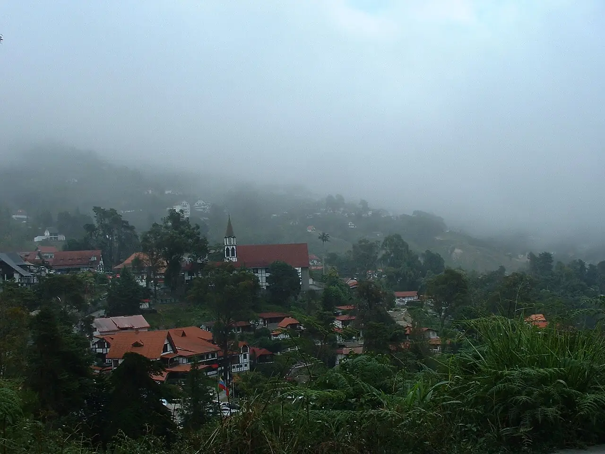
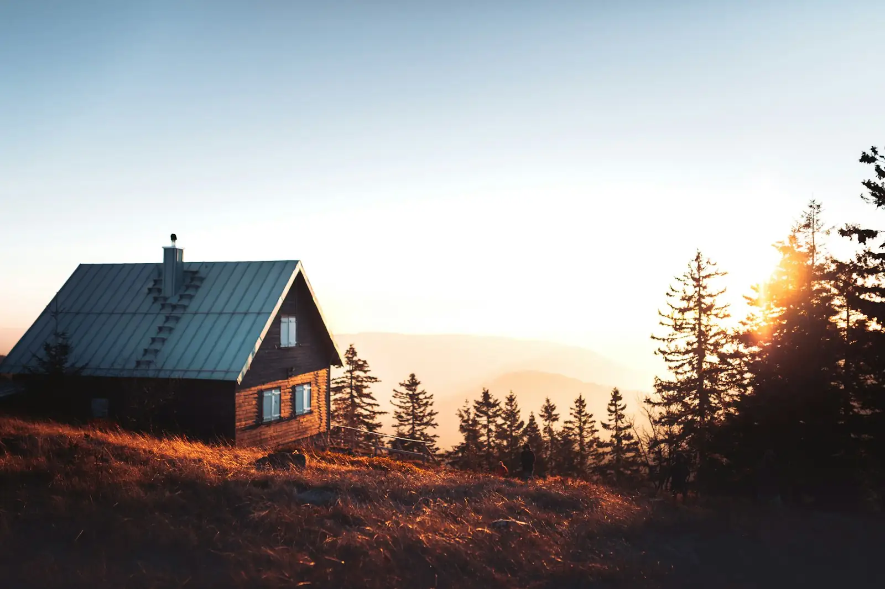

Cómo llegar
Estamos en la Colonia Tovar, estado Aragua. Pídanos la ubicación exacta por WhatsApp.
El frío empieza en la subida
Traiga abrigo: la Colonia Tovar es tierra fría, con neblina y aire puro.
- Desde CaracasSe sube por El Junquito y se sigue la carretera de montaña hasta la Colonia. Unas dos horas, según el tráfico.
- Desde AraguaSe sube desde La Victoria por la carretera de la Colonia Tovar, entre curvas y neblina. Cerca de una hora.
- Al llegarPase bajo el arco de entrada y escríbanos. Le decimos cómo seguir hasta las cabañas.

Antes de salir
- Suba con tiempo: hay muchas curvas y a veces baja la neblina.
- Traiga abrigo, sobre todo para la noche.
- Los tiempos son aproximados.
